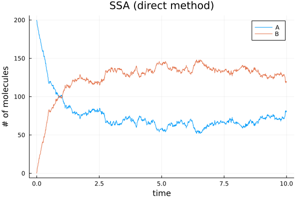
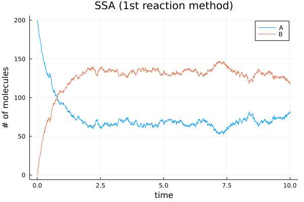

Stochastic simulations
Contents
Stochastic simulations#
Gillespie Algorithm#
and friends!
using StatsBase # Weights() and sample()
using Random # randexp()
using Plots
using Interpolations
using Statistics # mean()
Random.seed!(2022)
TaskLocalRNG()
#=
Stochastic chemical reaction: Gillespie Algorithm (direct method)
Adapted from: Chemical and Biomedical Enginnering Calculations Using Python Ch.4-3
=#
function ssa_direct(model, u0::AbstractArray, tend, p, stoich; tstart=zero(tend))
t = tstart # Current time
ts = [t] # Time points
u = copy(u0) # Current state
us = copy(u) # States over time
while t < tend
a = model(u, p, t) # propensities
dt = randexp() / sum(a) # Time step for the direct method
du = sample(stoich, Weights(a)) # Choose the stoichiometry for the next reaction
u .+= du # Update state
t += dt # Update time
us = [us u] # Append state
push!(ts, t) # Append time point
end
# Trasnpose to make columns as variables, rows as observations
us = collect(us')
return (t = ts, u = us)
end
ssa_direct (generic function with 1 method)
#=
Stochastic chemical reaction: Gillespie Algorithm (first reaction method)
Adapted from: Chemical and Biomedical Enginnering Calculations Using Python Ch.4-3
=#
function ssa_first(model, u0, tend, p, stoich; tstart=zero(tend))
t = tstart # Current time
ts = [t] # Time points
u = copy(u0) # Current state
us = copy(u) # States over time
while t < tend
a = model(u, p, t) # propensities
dts = randexp(length(a)) ./ a # dts from all reactions
# Choose the reaction
i = argmin(dts)
dt = dts[i]
du = stoich[i]
# Update state and time
u .+= du
t += dt
us = [us u] # Append state variable to record
push!(ts, t) # Append time point to record
end
# Make column as variables, rows as observations
us = collect(us')
return (t = ts, u = us)
end
ssa_first (generic function with 1 method)
"""
Propensity model for this reaction.
Reaction of A <-> B with rate constants k1 & k2
"""
model(u, p, t) = [p.k1 * u[1], p.k2 * u[2]]
model
parameters = (k1=1.0, k2=0.5, stoich=[[-1, 1], [1, -1]])
u0 = [200, 0]
tend = 10.0
soldirect = ssa_direct(model, u0, tend, parameters, parameters.stoich)
solfirst = ssa_first(model, u0, tend, parameters, parameters.stoich)
(t = [0.0, 0.0165255323797742, 0.01792980216355475, 0.01814264677146815, 0.025250479227758575, 0.0324063023257329, 0.03266594295752242, 0.032864627320191166, 0.03431937795350074, 0.03788608909600194 … 9.947176616253262, 9.947523216986712, 9.960625432800862, 9.966245545707723, 9.973673499392937, 9.977645310899993, 9.980074739478713, 9.986383183411878, 9.995330123568062, 10.015023235554242], u = [200 0; 199 1; … ; 81 119; 80 120])
plot(soldirect.t, soldirect.u,
xlabel="time", ylabel="# of molecules",
title = "SSA (direct method)", label=["A" "B"])

plot(solfirst.t, solfirst.u,
xlabel="time", ylabel="# of molecules",
title = "SSA (1st reaction method)", label=["A" "B"])

# Running an ensemble of simulations
numRuns = 50
# TODO: multi-threading
sols = map(1:numRuns) do i
ssa_direct(model, u0, tend, parameters, parameters.stoich)
end;
# Build interpolation functions
itpsA = map(sols) do sol
LinearInterpolation(sol.t, sol.u[:, 1], extrapolation_bc = Line())
end;
itpsB = map(sols) do sol
LinearInterpolation(sol.t, sol.u[:, 2], extrapolation_bc = Line())
end;
# Functions to caculate average A and B concentrations in the ensemble
# Using the for mean(func, itr)
a_avg(t) = mean(i->i(t), itpsA)
b_avg(t) = mean(i->i(t), itpsB)
b_avg (generic function with 1 method)
pl1 = plot(xlabel="Time", ylabel="# of molecules", title = "SSA (direct method) ensemble")
for sol in sols
plot!(pl1, sol.t, sol.u, linecolor=[:blue :red], linealpha=0.05, label=false)
end
# Plot averages
plot!(pl1, a_avg, 0.0, tend, linecolor=:black, linewidth=3, linestyle = :solid, label="Avarage [A]")
plot!(pl1, b_avg, 0.0, tend, linecolor=:black, linewidth=3, linestyle = :dash, label="Avarage [B]")

Using Catalyst#
Catalyst.jl is a domain-specific language (DSL) package to solve law of mass action problems.
model = @reaction_network begin
# Reaction1
# Reaction2
# ...
end param1 param2 ...
The order of variables depdends on when they are introduced in the reactions. The order of parameters depdends on the order after end.
using Catalyst
abModel = @reaction_network begin
k1, A --> B
k2, B --> A
end k1 k2
The system with integer state variables belongs to DiscreteProblem. A DiscreteProblem could be further dispatched into other types of problems, such as ODEProblem, SDEProblem, and JumpProblem.
using DifferentialEquations
params = (1.0, 0.5) # k1 and k2
u0 = [200, 0] # A and B
tspan = (0.0, tend)
prob = DiscreteProblem(abModel, u0, tspan, params)
DiscreteProblem with uType Vector{Int64} and tType Float64. In-place: true
timespan: (0.0, 10.0)
u0: 2-element Vector{Int64}:
200
0
In this case, we would like to solve a JumpProblem using Gillespie’s Direct stochastic simulation algorithm (SSA).
jumpProb = JumpProblem(abModel, prob, Direct())
JumpProblem with problem DiscreteProblem with aggregator Direct
Number of constant rate jumps: 0
Number of variable rate jumps: 0
Number of mass action jumps: 2
sol = solve(jumpProb, SSAStepper())
using Plots
plot(sol)

See also the DiffEq docs about discrete stochastic examples.
High-level solutions using
Catalyst.jland low-level solutions defining the jumps directly.Coupling stochastic discrete jumping and ODEs.
RegularJumpsusing a more efficient tau-leaping method.More solvers for discrete stochastic simulations.